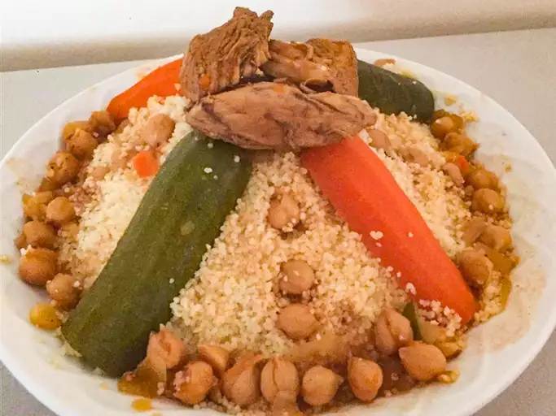

This recipe is made with mutton and chicken, but you can easily change the meats for lamb and/or merguez. I make this often and my family loves it!
Heat 3 tablespoons olive oil in a large pot over medium-high heat.
Season mutton chops and chicken drumsticks with salt and pepper;
cook in batches with onions in the hot oil until browned, about 2
minutes per side. Transfer to a large plate.
Add mutton chops, chicken drumsticks, salt and pepper, and cook for
about 10 minutes, stirring occasionally. Transfer to a large plate.
Add onions and cook for about 10 minutes, stirring occasionally.
Transfer to a large plate.
Add mutton chops, chicken drumsticks, salt and pepper, and cook for
about 10 minutes, stirring occasionally. Transfer to a large plate.
Add onions and cook for about 10 minutes, stirring occasionally.
Transfer to a large plate.
For homemade ras el hanout, mix: 1 teaspoon ground cumin, 1
teaspoon ground ginger, 1 teaspoon ground turmeric, 3/4 teaspoon
ground cinnamon, 3/4 teaspoon freshly ground black pepper, 1/2
teaspoon ground white pepper, 1/2
teaspoon ground coriander, 1/2 teaspoon ground cayenne, 1/2
teaspoon ground nutmeg, and 1/4
teaspoon ground cloves (optional).